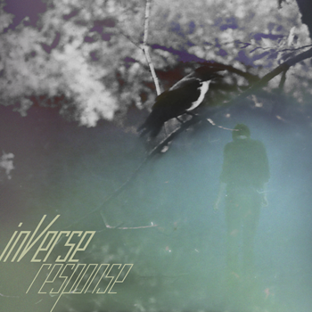

Hi!
We are proudly presenting our first studio record in years - the Response EP.
The recording session took place in autumn 2010 at the RP-Studio, St. Petersburg, Russia.
We have made this record available for free download in mp3 and flac format so that every creature could easily get it if they want to. The digital version of the Response EP is supposed to be distributed for free so do not try to sell it.
Labels and everyone who wishes to help us in any possible way - in promotion or getting signed - please feel free to contact us by e-mail or through the social networks. All who just want to ask or say anything to us directly may do the same.
Thanks to everyone who helped/supported us, used to go to see our live performances at those tiny local rock clubs with poor ventilation and cheap beer, and all who did really care to listen to the music our little band have been making all these years.
We hope that you will love this record - just like we do..